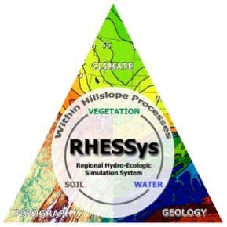

Home

Welcome to the online home for RHESSys, the Regional Hydro-Ecologic Simulation System. RHESSys is a distributed physically-based model designed to simulate daily water, carbon, energy, and nutrient fluxes at the watershed scale. RHESSys combines the functionality of a hydrological model and an ecological model. Thus, RHESSys is able to represent how water moves through a watershed, from upland areas to riparian zones and the stream via surface topography, subsurface pathways, and groundwater. Vegetation is also simulated in the model, growing by gaining carbon via photosynthesis, but also losing carbon via respiration, turnover, and mortality. Vegetation processes in the model are mediated by water, energy, and nutrient availability. At the same time, water and nutrient availability to streamflow is mediated by vegetation.
This feedback loop between water and vegetation within RHESSys is what makes the model unique. It separates RHESSys from a typical distributed hydrology model, which has vegetation on a landscape, but that vegetation doesn’t grow. It is also separates RHESSys from most ecological models, which often simulate subsurface processes for the vegetation growth, but cannot capture water redistribution along hillslopes or output to a stream. The coupling allows users to explore novel questions about environmental system behavior.
Advantages of RHESSys
- Culmination of 30+ years of development.
- Completely open source.
- Growing community of developers and users.
Resources
- Github: Browse RHESSys source code and obtain model.
- RHESSys Wiki: Find documentation on how to set up and run RHESSys.
- RHESSysPreprocessing: Tools for setting up RHESSys using R.
- RHESSysIOinR: Tools for running RHESSys using R.
Upcoming events
RHESSys Conference 2024 will be held on 1-2 May 2024. Abstract deadline is the 15th of March.